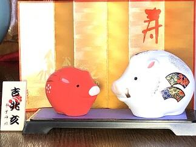

文字
背景
行間


2019年1月の記事一覧
千葉県高等学校ラグビーフットボール大会・新人大会準々決勝
投稿日時 : 2019/01/19
 sakura-h
sakura-h


本日１月１９日（土）は３年生にとってとても大切な大学入試センター試験の第１日目でした。風はかなり吹いていたものの晴天で全国的にもまずまずの天候だったようです。受験生の皆さんが十分に力を発揮されていることを祈ります。
さて、天台スポーツセンターにおいては千葉県高等学校ラグビーフットボール大会・新人大会準々決勝が行われました。佐倉高校は、八千代松陰高校と対戦しました。前半は互いに１トライづつ決め、前半の得点は５－５のまさに一進一退の互角の戦いでした。後半に入ると自陣内での攻防が多くなり八千代松陰高校に２つのトライとその後のコンバージョンゴールも決められ１４点差で残念ながら敗れてしまいましたが、次へ繋がる良い試合だったと思います。応援に来ていただいた保護者や佐倉高校OBの方々、いつも応援やご支援ありがとうございます。今後ともよろしくお願いたします。
防災とボランティアの日
24年前の今日、1995年1月17日午前5時46分に淡路島北端を震源とする兵庫県南部地震が発生しました。この阪神・淡路大震災では、学生を中心としたボランティア活動が活発化し、「日本のボランティア元年」と言われました。これをきっかけに、ボランティア活動への認識を深め、災害への備えの充実強化を図る目的で、「防災とボランティアの日」の制定が1995年12月の閣議で決定され、翌1996年から実施されました。また、さらに関連して今日は、「おむすびの日」でもあります。なぜ今日がおむすびの日として選ばれたのかというと、阪神大震災のその当時、混乱する現場でボランティアの方々が被災した方々に支援として、まずは食料だろうと、それもすぐに食べられて温かみが伝わるものは何が良いか考えられ、炊き出しでは、おむすびが提供されたそうです。現在のようにボランティア活動の受け入れ体制も何も無かった状況でボランティアの方々が、思いやりの心と現場で困っている方々に何が必要か想像力を働かせながら献身的に働かれたことにより未曾有の危機的な状況を乗り越えてきたのでしょう。それにより多くの被災者が励まされたことから、いつまでもこの善意を忘れないため、1月17日を記念日としたそうです。人はどんな状況でも誰かのために動いたときに持てる力を総合的に発揮してすばらしい結果を出すことができるんですね。
災害は、もちろん無いにこしたことはありませんが、過去のいろいろな教訓から学びそれらを生かせるように、常に備えをしておくことが重要です。そして、普段どおりの生活をできることに感謝を忘れないことが最も重要だと思います。
災害は、もちろん無いにこしたことはありませんが、過去のいろいろな教訓から学びそれらを生かせるように、常に備えをしておくことが重要です。そして、普段どおりの生活をできることに感謝を忘れないことが最も重要だと思います。
小正月に思う
１月15日は、20年前の1999年までは成人の日であり、国民の祝日として行事が行われていました。2000年からは、ハッピーマンデー制度導入に伴い1月第2月曜日、つまり、その年の1月8日から14日までのうち月曜日に該当する日に変更されました。今年は昨日が成人の日でした。また、成人年齢を20歳から18歳に引き下げる改正民法が昨年6月13日に参院本会議で可決、成立し施行は2022年4月1日です。これに伴い2022年度の成人式はどのように行われるのか話題になっていたのはつい最近ですね。時が経つのは早いもので、お正月の行事が一区切りとなるのがこの小正月です。そんなことを朝、小豆粥を食べながら考えていました。さて、話は変わりますが、この3連休中も、生徒はそれぞれの目標達成のために努力するとともに、実力を発揮して活躍をしてくれています。ラグビー部は、1月12日（土）に東京学館浦安高校に３２−１２で勝ち県ベスト８になりました。1月19日（土）に八千代松陰高校とベスト４をかけて天台スポーツセンターで対戦します。応援よろしくお願いします。男子バスケットボール部は県大会でベスト16に入り、男子バレー部も地区予選を勝ち上がり2月に行われる県大会への出場を決めるなど良く頑張っています。本当にすばらしい。
なお、この1月19日、20日は、いよいよ大学入試センター試験が行われます。3年生は今まで培ってきた実力を十二分に発揮できるよう健康に気を付け自分を信じて試験に臨んでほしいと思います。
なお、この1月19日、20日は、いよいよ大学入試センター試験が行われます。3年生は今まで培ってきた実力を十二分に発揮できるよう健康に気を付け自分を信じて試験に臨んでほしいと思います。
氷結
 東郷池の水を濾過するために水を循環させていますが、どうしても池の表面で流れが緩やかな部分があり、このところの寒気の強まりでせいで、池の表面の3分の１が氷結しました。(左写真)ちなみに佐倉高校周辺の早朝の気温は、マイナス３℃でした。また、このところ１７日間連続で雨が降っていないこともあり、乾燥注意報が継続して出されています。空気が乾燥すると、のどの粘膜の防御機能が低下し、インフルエンザにかかりやすくなるので手洗いや適度に水分を補給することが重要です。また、体のウイルスへの抵抗力を高めるために、十分な休養とバランスのとれた栄養摂取を日ごろから心がけましょう。あと、免疫力を高めるために腸内環境を整えることが大切です。そのためにも食べ物に気をつけるだけでなくお腹を冷やさないようにしましょう。みんなでこの冬を元気に乗り越えましょう。
東郷池の水を濾過するために水を循環させていますが、どうしても池の表面で流れが緩やかな部分があり、このところの寒気の強まりでせいで、池の表面の3分の１が氷結しました。(左写真)ちなみに佐倉高校周辺の早朝の気温は、マイナス３℃でした。また、このところ１７日間連続で雨が降っていないこともあり、乾燥注意報が継続して出されています。空気が乾燥すると、のどの粘膜の防御機能が低下し、インフルエンザにかかりやすくなるので手洗いや適度に水分を補給することが重要です。また、体のウイルスへの抵抗力を高めるために、十分な休養とバランスのとれた栄養摂取を日ごろから心がけましょう。あと、免疫力を高めるために腸内環境を整えることが大切です。そのためにも食べ物に気をつけるだけでなくお腹を冷やさないようにしましょう。みんなでこの冬を元気に乗り越えましょう。 春の七草
七草（ななくさ）は、人日の節句（1月7日）の朝に、7種の野草あるいは野菜が入った粥（七草粥)を食べる風習のこと。七草粥は新年の無病息災・豊年を願っていただくわけですがお正月に御節料理で疲れた胃腸にやさしく、冬に不足しがちな栄養を野菜から摂れるということで体調を整える意味でも良いとされています。ちなみに、歴史や地方によって多少異なるようですが、一般的に春の七草とは「芹（せり）、薺（なづな）、御形（ごぎょう）、繁縷（はこべら）、仏座（ほとけのざ）、菘（すずな）、蘿蔔（すずしろ）」の七種の植物を言います。
小寒
 今年の１月６日は「小寒」で「寒の入り」となります。寒（かん）とは、暦の上で寒さが最も厳しいとされる期間のことで小寒から立春の日の前日までの約30日間を言います。また、小寒とは、「しょうかん」と読み、二十四節気（にじゅうしせっき）の第23節目です。小寒は、太陽暦の1月6日ごろに始り、大寒（1月20日ごろ）の前日までの約15日間、またはこの期間の第1日目を指します。
今年の１月６日は「小寒」で「寒の入り」となります。寒（かん）とは、暦の上で寒さが最も厳しいとされる期間のことで小寒から立春の日の前日までの約30日間を言います。また、小寒とは、「しょうかん」と読み、二十四節気（にじゅうしせっき）の第23節目です。小寒は、太陽暦の1月6日ごろに始り、大寒（1月20日ごろ）の前日までの約15日間、またはこの期間の第1日目を指します。また、今日は3年ぶり（前回は2016年3月9日）の部分日食で、全国で天候が良ければ観測できます。今年は部分日食の観測の機会が2回あるそうで、２回目は12月26日だそうです。東京近辺では１０：０６くらいが食の最大になります。（部分日食についてや安全な観測の仕方について詳しくは国立天文台のWebページでご確認ください。）
左の写真は、部分日食を撮ろうとレンズにフィルターを付けて、外で９：００から雲の切れ間を狙っていたところ、９：４５に雲が偶然切れた瞬間に撮れたものです。
明日から学校が始まります。お正月の間に養った鋭気で、皆で目標の実現に向けて、健やかに、朗らかにいきましょう。
御用始め


 今日は、佐倉は朝からとても寒くて通勤で学校に歩いている途中は目と耳が痛かったです。（凍っちゃうんじゃないかと思うほど）
今日は、佐倉は朝からとても寒くて通勤で学校に歩いている途中は目と耳が痛かったです。（凍っちゃうんじゃないかと思うほど）案の定、気温は氷点下だったようで東郷池も凍っていました。寒の入りが近いので朝晩の寒さが一段と厳しくなっているようです。特に室内と外の寒暖差が激しいので皆さんも健康に気を付けてお過ごしください。
初詣（合格祈願）
 昨日、今日と風もなく、暖かな日差しに恵まれ初詣にはとても良い天気になりました。私は、昨日は地元や県内の神社仏閣にお参りをし、今日はちょっと足を延ばして、東京の湯島天満宮（湯島天神）に佐倉高校の受験生の合格祈願に行ってきました。本殿にあがって合格祈願ができて良かったです。さすがに日本有数の天神様だけあって、多くの参拝者で賑わってました。受験生の皆さんは、試験で実力を発揮できるように健康に気を付けて頑張ってください。
昨日、今日と風もなく、暖かな日差しに恵まれ初詣にはとても良い天気になりました。私は、昨日は地元や県内の神社仏閣にお参りをし、今日はちょっと足を延ばして、東京の湯島天満宮（湯島天神）に佐倉高校の受験生の合格祈願に行ってきました。本殿にあがって合格祈願ができて良かったです。さすがに日本有数の天神様だけあって、多くの参拝者で賑わってました。受験生の皆さんは、試験で実力を発揮できるように健康に気を付けて頑張ってください。 謹賀新年（平成31年元旦）
新年あけましておめでとうございます。今年もどうそよろしくお願いいたします。今年は平成31 己亥（つちのと・い）年です。しっかりと力をつけて次のステージに向けて頑張っていきましょう。